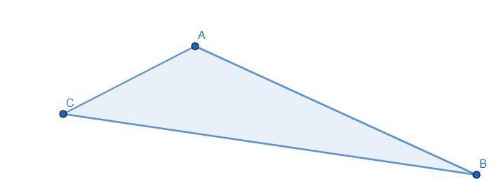
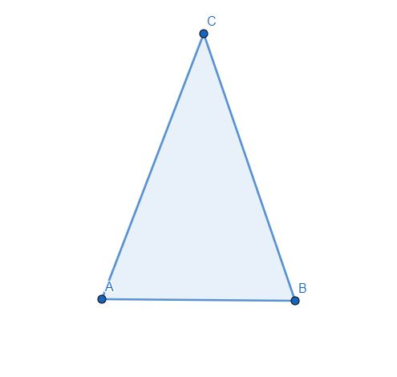
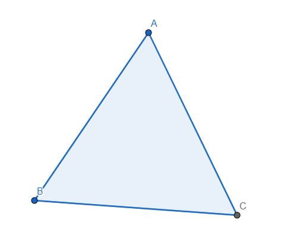

¿UN PANAL DE TRIANGULOS?
Una vez hemos conocido algo más de los polígonos, volvamos a nuestro panal de abejas ¿Podemos construir un panal a base de triángulos iguales?
Para esta actividad continuaremos trabajando en grupos de tres, os entregaremos varias piezas de triángulos con las que tendréis que intentar hacer el panal de abejas.
En las piezas habrá triángulos escalenos, isósceles y equiláteros.
ESCALENO
Todos los lados son desiguales

ISÓSCELES
Tiene dos lados iguales y uno desigual

EQUILÁTERO
Todos los lados son iguales

Podemos saber más de los triángulos en el siguiente vídeo: LOS TRIÁNGULOS
Se os entregará una cartulina con un punto central, donde deberán confluir los vértices de los triángulos con los que se quiere formar el panal.
UNA VEZ DESCUBRAS LA RESPUESTA A LA PREGUNTA, CONTINÚA CON LA SIGUIENTE ACTIVIDAD.
Con esta actividad el alumnado deberá descubrir como teselar (rellenar el plano sin dejar huecos) el plano con triángulos.
Se consigue de forma manipulativa distinguir y reforzar la clasificación de los triángulos atendiendo a sus lados y se trabaja el concepto de ángulo y sus operaciones.
Temporalización: 1 sesión.